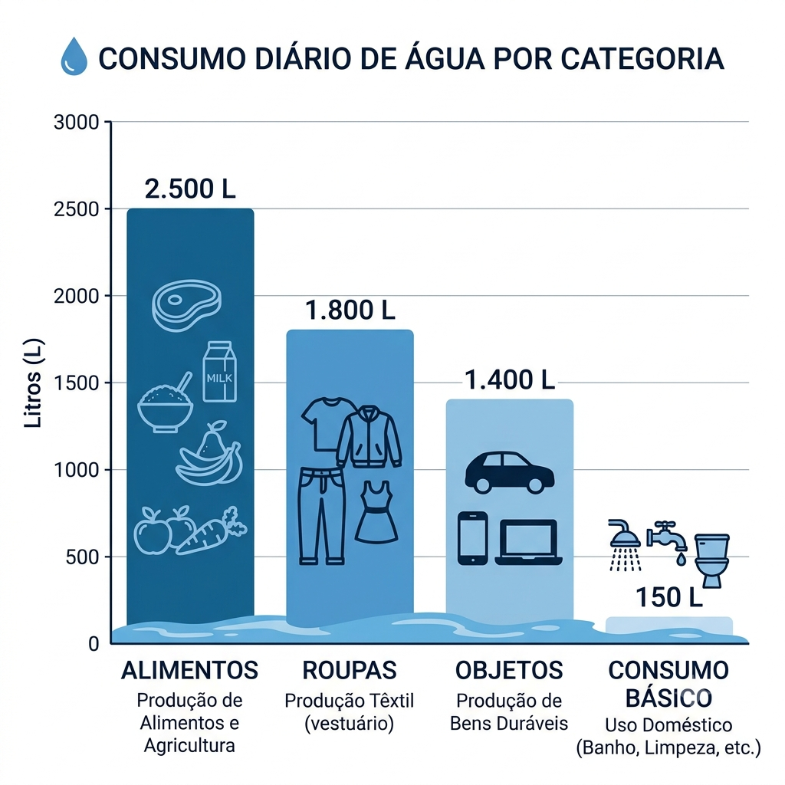

introdução
Por trás de todos os alimentos, roupas, acessórios e objetos que utilizamos durante o dia, uma quantidade considerável de água é utilizada para a sua produção.

Água e o Consumismo
A água é essencial para a vida, mas também é muito usada na produção de roupas, acessórios e outros produtos do dia a dia.
Estima-se que cerca de 70% da água doce disponível no mundo seja destinada à agricultura, principalmente para o cultivo de matérias-primas como o algodão, amplamente utilizado na indústria da moda (UNESCO, 2020).
Esse setor é um dos que mais consomem água. A produção de uma simples camiseta de algodão pode gastar cerca de 2.700 litros de água, enquanto um único par de jeans pode exigir aproximadamente 7.500 a 10.000 litros durante todo o processo de fabricação (WWF, 2013).
Além disso, a indústria têxtil também polui bastante, já que o tingimento e o tratamento dos tecidos geram cerca de 20% da poluição industrial da água no mundo, contaminando rios e oceanos (ONU Meio Ambiente, 2019).
Outros produtos, como eletrônicos e objetos de consumo rápido, também dependem de muita água para serem produzidos.
O problema aumenta com o consumismo, já que a troca constante de produtos faz com que a produção cresça e, consequentemente, o uso de água também.
Segundo estudos, o consumo global de recursos naturais aumentou mais de 250% nos últimos 50 anos, impulsionado principalmente pelo estilo de vida consumista (Global Footprint Network, 2022).
Por isso, é importante repensar nossos hábitos de consumo. Comprar só o necessário, reutilizar e reciclar produtos e apoiar empresas mais sustentáveis são atitudes que ajudam a reduzir o desperdício de água e a preservar esse recurso tão importante para o futuro.
O consumismo influencia diretamente o gasto de água, pois praticamente todos os produtos que utilizamos precisam de água para serem produzidos. Essa água, chamada de "água virtual", está presente na fabricação de alimentos, roupas, eletrônicos e diversos outros itens, mesmo que não seja visível. Por isso, consumir de forma consciente é uma maneira de reduzir o desperdício e contribuir para a preservação dos recursos hídricos.
Referências
UNESCO. The United Nations World Water Development Report 2020.
WWF. Water Footprint of Products. 2013.
ONU Meio Ambiente (UNEP). Sustainability and the Fashion Industry. 2019.
Global Footprint Network. Earth Overshoot Day and Resource Consumption Data. 2022.
Inteligência artificial para o gráfico